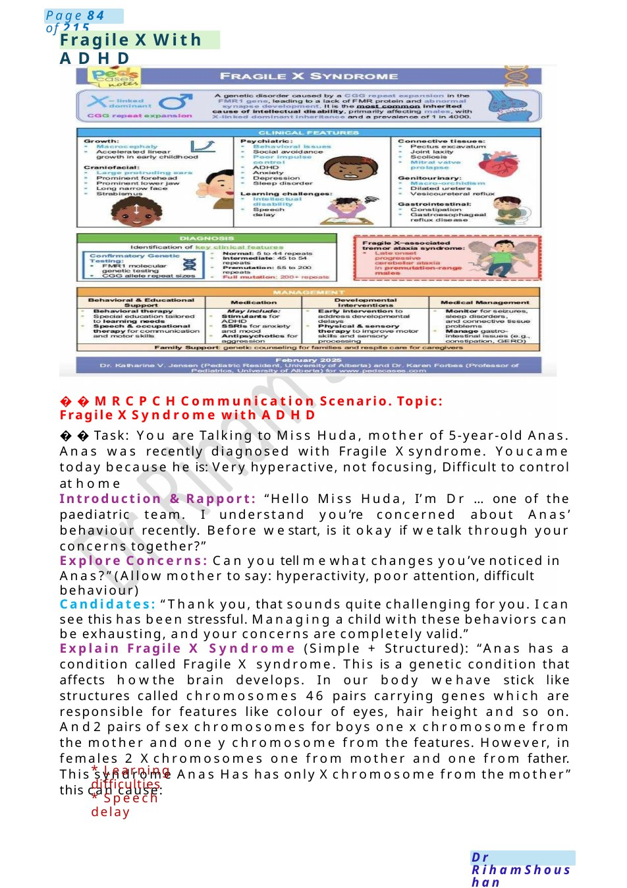
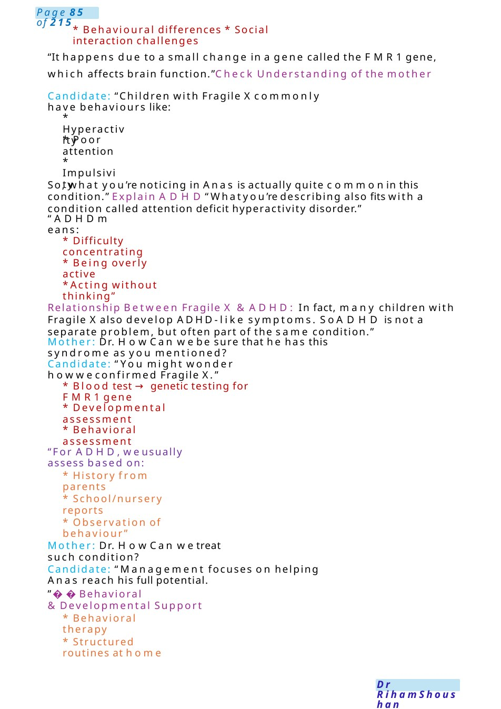
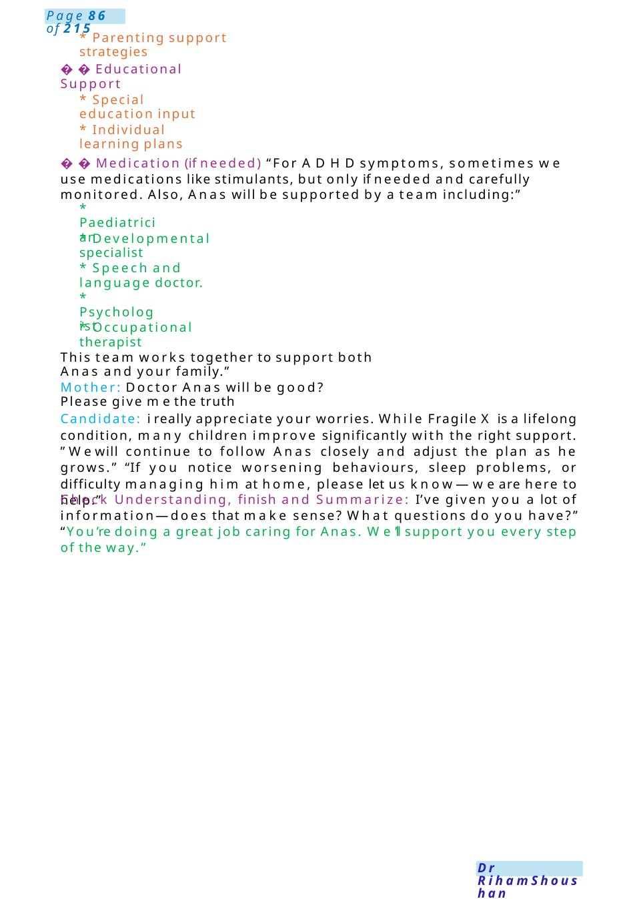
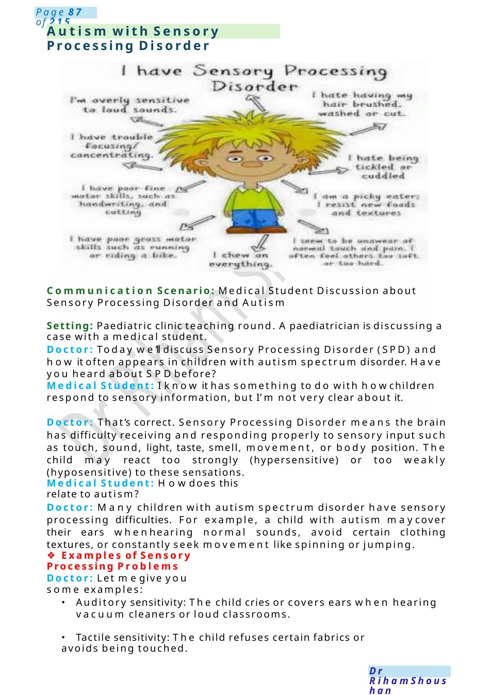

Fragile XWith ADHD
MRCPCHCommunication Scenario. Topic: Fragile XSyndrome with ADHD Task: You are Talking to Miss Huda, mother of 5-year-old Anas. Anas was recently diagnosed with Fragile Xsyndrome. Youcame today because he is: Very hyperactive, not focusing, Difficult to control at home
Scenario Summary
MRCPCHCommunication Scenario. Topic: Fragile XSyndrome with ADHD Task: You are Talking to Miss Huda, mother of 5-year-old Anas. Anas was recently diagnosed with Fragile Xsyndrome. Youcame today because he is: Very hyperactive, not focusing, Difficult to control at home
Full Original Scenario

Fragile XWith ADHD
MRCPCHCommunication Scenario. Topic: Fragile XSyndrome with ADHD
Task: You are Talking to Miss Huda, mother of 5-year-old Anas. Anas was recently diagnosed with Fragile Xsyndrome. Youcame today because he is: Very hyperactive, not focusing, Difficult to control at home
Introduction &Rapport: “Hello Miss Huda, I’m Dr ...one of the paediatric team. I understand you’re concerned about Anas’ behaviour recently. Before westart, is it okay if wetalk through your concerns together?”
Explore Concerns: Can you tell mewhat changes you’ve noticed in Anas?” (Allow mother to say: hyperactivity, poor attention, difficult behaviour)
Candidates: “Thank you, that sounds quite challenging for you. I can see this has been stressful. Managing a child with these behaviors can be exhausting, and your concerns are completely valid.”
Explain Fragile X Syndrome (Simple + Structured): “Anas has a condition called Fragile X syndrome. This is a genetic condition that affects howthe brain develops. In our body wehave stick like structures called chromosomes 46 pairs carrying genes which are responsible for features like colour of eyes, hair height and so on. And2 pairs of sex chromosomes for boys one x chromosome from the mother and one y chromosome from the features. However, in females 2 Xchromosomes one from mother and one from father. This syndrome Anas Has has only Xchromosome from the mother” this can cause:
- Learning difficulties
- Speech delay

- Behavioural differences * Social interaction challenges
“It happens due to a small change in a gene called the FMR1gene, which affects brain function.”Check Understanding of the mother
Candidate: “Children with Fragile Xcommonly have behaviours like:
- Hyperactivity
- Poor attention
- Impulsivity
So, what you’re noticing in Anas is actually quite commonin this condition.” Explain ADHD“Whatyou’re describing also fits with a condition called attention deficit hyperactivity disorder.”
“ADHDmeans:
- Difficulty concentrating
- Being overly active
- Acting without thinking”
Relationship Between Fragile X &ADHD: In fact, many children with Fragile Xalso develop ADHD-like symptoms. SoADHD is not a separate problem, but often part of the same condition.”
Mother: Dr. How Can webe sure that he has this syndrome as you mentioned?
Candidate: “You might wonder howweconfirmed Fragile X.”
- Blood test →genetic testing for FMR1gene
- Developmental assessment
- Behavioral assessment
“For ADHD,weusually assess based on:
- History from parents
- School/nursery reports
- Observation of behaviour”
Mother: Dr. How Can wetreat such condition?
Candidate: “Management focuses on helping Anas reach his full potential.
”Behavioral &Developmental Support
- Behavioral therapy
- Structured routines at home

- Parenting support strategies
Educational Support
- Special education input
- Individual learning plans
Medication (if needed) “For ADHDsymptoms, sometimes we use medications like stimulants, but only if needed and carefully monitored. Also, Anas will be supported by a team including:”
- Paediatrician
- Developmental specialist
- Speech and language doctor.
- Psychologist
- Occupational therapist
This team works together to support both Anas and your family.”
Mother: Doctor Anas will be good? Please give methe truth
Candidate: i really appreciate your worries. While Fragile X is a lifelong condition, many children improve significantly with the right support. ”Wewill continue to follow Anas closely and adjust the plan as he grows.” “If you notice worsening behaviours, sleep problems, or difficulty managing him at home, please let us know—we are here to help.”
Check Understanding, finish and Summarize: I’ve given you a lot of information—does that make sense? What questions do you have?” “You’re doing a great job caring for Anas. We’ll support you every step of the way.”

Autism with Sensory Processing Disorder
Communication Scenario: Medical Student Discussion about Sensory Processing Disorder and Autism
Setting: Paediatric clinic teaching round. Apaediatrician is discussing a case with a medical student.
Doctor: Today we’ll discuss Sensory Processing Disorder (SPD) and how it often appears in children with autism spectrum disorder. Have you heard about SPDbefore?
Medical Student: I know it has something to do with howchildren respond to sensory information, but I’m not very clear about it.
Doctor: That’s correct. Sensory Processing Disorder means the brain has difficulty receiving and responding properly to sensory input such as touch, sound, light, taste, smell, movement, or body position. The child may react too strongly (hypersensitive) or too weakly (hyposensitive) to these sensations.
Medical Student: Howdoes this relate to autism?
Doctor: Many children with autism spectrum disorder have sensory processing difficulties. For example, a child with autism maycover their ears whenhearing normal sounds, avoid certain clothing textures, or constantly seek movement like spinning or jumping.
❖Examples of Sensory Processing Problems
Doctor: Let megive you some examples:
- Auditory sensitivity: The child cries or covers ears when hearing vacuum cleaners or loud classrooms.
- Tactile sensitivity: The child refuses certain fabrics or avoids being touched.